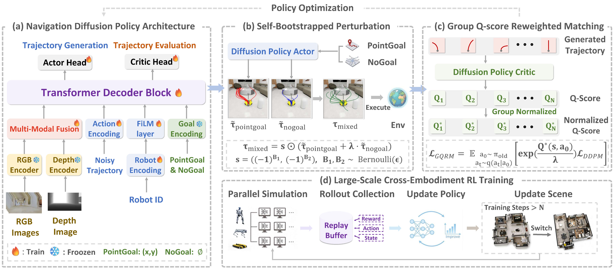

Abstract
Pretraining navigation diffusion policies rely on large-scale expert demonstrations. These data are typically generated by a fully-informed oracle planner suited to a single nominal robot. This limits the policy's generalization to diverse embodiments and challenging scenarios (e.g., escaping dead ends or detouring long obstacles) that demand diverse local reactive behaviors with only onboard local observations. Post-training the policy with reinforcement learning (RL) offers a principled remedy. However, previous RL for diffusion approaches lead to only marginal improvements. This is because the intractable likelihood of diffusion policies renders policy gradients unstable in addition to inefficient policy exploration. To address these challenges, we propose a data-efficient diffusion RL post-training framework - GQRM (Group Q-score Reweighted Matching). Our framework introduces two complementary designs: (i) a self-bootstrapped exploration strategy with behavior perturbation that preserves the pretrained policy prior, and (ii) a group Q-score normalization mechanism that computes per-trajectory values on each state for efficient reweighted score matching. By conducting distributed online RL training across heterogeneous embodiments, the resulting fine-tuned policy, X-NavDP, achieves state-of-the-art cross-embodiment visual navigation performance, improving the overall success rate from 61.20% to 84.28% in simulation and 10% to 65% in real-world hard cases.
Group Q-score Reweighted Matching
Instead of relying on unstable likelihood-based policy gradients for diffusion policies, GQRM converts value estimates into normalized trajectory weights and applies reweighted score matching during post-training. It includes three key components: (1) self-bootstrapped perturbation mixes goal-conditioned and goal-agnostic trajectories for efficient exploration; (2) group Q-score normalization performs intra-state trajectory comparison, enabling the actor to learn from low-return hard samples and reweight probabilities toward locally superior trajectories; and (3) embodiment-conditioned modulation supports cross-embodiment policy training.

Pretrained NavDP
local visual observations
Self-Bootstrapped Perturbation
efficient behavior exploration
Group Q-Score Reweighted Matching
intra-state trajectory reweighting
X-NavDP
cross-embodiment navigation policy
Qualitative Comparison
Side-by-side rollout comparisons across challenging scenarios show that X-NavDP (ours, left) can recover from dead ends, perform safety-aware obstacle avoidance, and detour around long obstacles, while the NavDP baseline (right) often gets stuck.
X-NavDP (Ours)
NavDP (Baseline)
Scenario 1
X-NavDP hesitates when facing large obstacle regions and then reorients to search for a feasible exit.
Scenario 2
X-NavDP demonstrates stronger detouring behavior in densely cluttered scenarios.
Scenario 3
X-NavDP can bypass long obstacles instead of getting trapped by local blockage.
Scenario 4
X-NavDP chooses a safer route when multiple navigation options are available.
Scenario 5
X-NavDP hesitates when facing large obstacle regions and then reorients to search for a feasible exit.
Scenario 6
X-NavDP better recognizes traversable areas and does not blindly follow the point goal.
Featured Capabilities
Representative rollouts showcasing X-NavDP's learned behaviors across diverse scenarios and robot embodiments.
Back Out of Traps
Collision-Free Navigation
Embodiment-Aware Behavior
Dynamic Avoidance
Simulation Results
Synchronous Inference Training-time Evaluation
Evaluation during training with synchronous inference — the next trajectory is issued only after the previous trajectory has been executed for a fixed number of steps. Rollouts across three heterogeneous embodiments: Dingo, Unitree Go2, and Unitree G1.
Asynchronous Inference
Asynchronous inference — rollouts across three heterogeneous embodiments: Dingo, Unitree Go2, and Unitree G1.
Results
X-NavDP improves cross-embodiment navigation performance through reinforcement learning while also learning novel behaviors. It achieves remarkable results in complex scenarios that demand recovery from dead ends, circumnavigation of long-range obstacles, and detouring within dense environments.
Key Contributions
Data-efficient RL post-training. X-NavDP is an efficient RL post-training framework designed to enhance the general navigation ability of pretrained diffusion policies.
Structured exploration and stable training. X-NavDP leverages goal-agnostic diffusion trajectories and group-normalized Q-weighted score matching to enable structured exploration, improve training stability, and handle hard cases.
Cross-robot generalization and temporal consistency. Lightweight embodiment modulation and RTC guidance improve cross-robot generalization and temporal consistency, leading to superior post-trained navigation performance.
BibTeX
@misc{xnavdp2026,
title = {X-NavDP: Generalizing Navigation Diffusion Policy to Novel Behavior and Embodiments with Group Q-score Reweighted Matching},
author = {Anonymous Author(s)},
year = {2026}
}